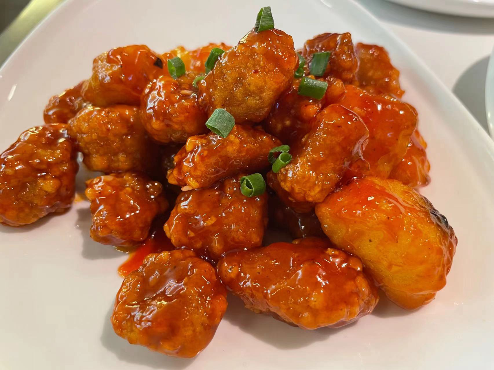

荔枝肉
荔枝肉是福州传统名菜，因形似荔枝而得名。选用猪里脊肉，外酥里嫩，酸甜可口。 这道菜色泽红亮，造型美观，口感丰富，是闽菜中色香味俱全的代表作。 荔枝肉不仅外形酷似荔枝，其酸甜口味也与荔枝有异曲同工之妙，展现了闽菜精湛的刀工和烹饪技艺。
酸甜可口
外酥里嫩
造型美观
色泽红亮
30
准备时间(分钟)
15
烹饪时间(分钟)
3-4
份量(人)
刀工艺术
荔枝肉的独特之处在于其精湛的刀工。厨师在猪里脊肉上剞十字花刀，深度约为肉厚的三分之二，然后切成小块。经过油炸后，肉块自然卷曲，形似荔枝，展现了闽菜对菜肴造型的美学追求。
主要食材
- 猪里脊肉 300克
- 荸荠 100克
- 红糟 2汤匙
- 白糖 3汤匙
- 白醋 2汤匙
- 番茄酱 1汤匙
- 淀粉 适量
- 鸡蛋 1个
- 葱姜蒜 适量
- 食用油 适量
- 盐 适量
营养成分（每100克）
- 热量：220千卡
- 蛋白质：18.2克
- 脂肪：12.5克
- 碳水化合物：8.8克
- 钙：25毫克
- 铁：2.2毫克
- 钠：280毫克
详细做法步骤
- 将猪里脊肉洗净，切成1厘米厚的片。
- 在肉片表面剞十字花刀，深度约为肉厚的三分之二。
- 将剞好花刀的肉片切成3厘米见方的小块。
- 将肉块用红糟、盐、料酒腌制15分钟。
- 荸荠去皮，切成小块；葱姜蒜切末备用。
- 在腌好的肉块中加入鸡蛋液和淀粉，抓匀上浆。
- 锅中放油，烧至六成热，逐块放入肉块炸至定型。
- 捞出肉块，待油温升至七成热时，复炸至外酥里嫩，捞出沥油。
- 锅中留少量底油，放入葱姜蒜爆香。
- 加入番茄酱、白糖、白醋和适量水，烧制成酸甜汁。
- 放入炸好的肉块和荸荠块，快速翻炒均匀。
- 待汤汁浓稠，均匀包裹在肉块上即可出锅装盘。
烹饪小贴士
- 选择新鲜的猪里脊肉，肉质更加嫩滑
- 剞花刀时要深浅一致，间距均匀，这样炸后才能形似荔枝
- 红糟是闽菜特色调料，能给菜肴增添独特风味和红色
- 炸肉时要控制好油温，先定型后复炸，达到外酥里嫩的效果
- 酸甜汁的比例可以根据个人口味调整，一般为糖:醋=3:2
- 翻炒时要快速，使汤汁均匀包裹肉块即可，不要过度翻炒
- 荸荠可以增加口感层次，也可以根据喜好加入其他配料
历史与文化
荔枝肉是福州传统名菜，已有百年历史。福州盛产荔枝，厨师们受到荔枝外形和口感的启发，创造了这道形似荔枝、味带酸甜的菜肴。
这道菜体现了闽菜注重刀工、讲究造型的特点，是闽菜中色香味形俱佳的代表作。在福州，荔枝肉是家常菜也是宴客菜，深受人们喜爱。